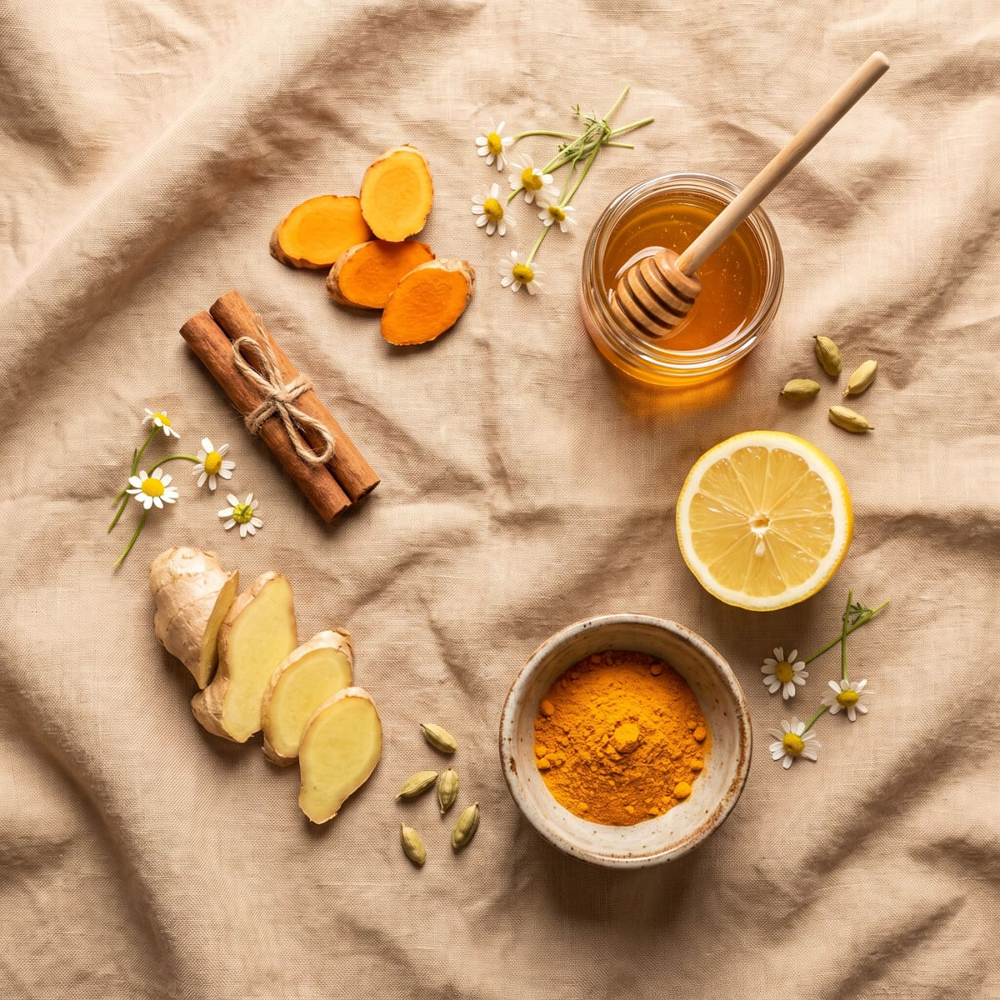

O ritual perfeito para os dias da sua prática
Esta é a receita completa do Chá Dourado — um ritual simples que combina ingredientes usados há séculos.
Cúrcuma, gengibre, canela e mel se encontram em uma xícara para criar um momento de pausa e cuidado — fácil de preparar, com ingredientes que você provavelmente já tem em casa.
Mais do que uma bebida, é um pequeno ritual que convida você a desacelerar antes — ou depois — da sua prática de Tai Chi em cadeira.
Quatro ingredientes simples, cada um com uma longa história de uso tradicional.
Tradicionalmente usada para apoiar a digestão, a cúrcuma contém curcumina, um composto estudado por suas propriedades anti-inflamatórias. Pode ajudar a estimular a produção de bile, favorecendo a digestão de gorduras.
DigestãoO gengibre é conhecido por estimular as enzimas digestivas e ajudar a aliviar o desconforto estomacal. Também é tradicionalmente associado ao apoio da circulação sanguínea.
Conforto · CirculaçãoA canela contém compostos que, segundo alguns estudos, podem ajudar a relaxar os vasos sanguíneos e apoiar a circulação saudável. Também tem propriedades antioxidantes.
Circulação · AntioxidanteAlém de adoçar naturalmente, o mel tem um efeito suave e reconfortante — o toque final do ritual.
Conforto
Estes são os quatro ingredientes que formam o ritual. Você encontra cúrcuma, gengibre e canela na seção de especiarias do seu mercado — e o mel, é claro, você já conhece.
O momento ideal é 20–30 minutos antes da sua sessão de Tai Chi, ou a qualquer hora do dia que você queira um momento de pausa e cuidado consigo mesma.
20–30 min antes do Tai Chi. Aquece o corpo por dentro e prepara a mente para começar com presença.
Use como pausa consciente — no meio da tarde, à noite, ou sempre que quiser um momento só seu.
Se você toma medicamentos anticoagulantes (afinadores de sangue) ou tem alguma condição de saúde específica, converse com seu médico antes de consumir cúrcuma, gengibre ou canela regularmente, já que esses ingredientes podem interagir com certos medicamentos.